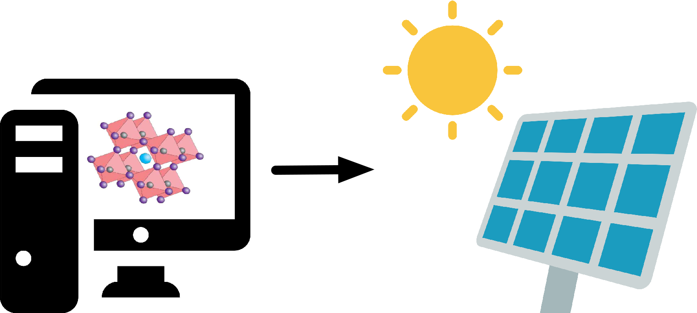
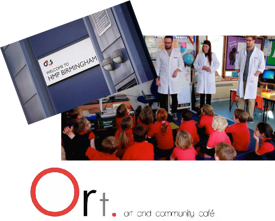
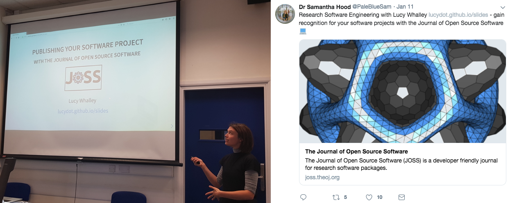
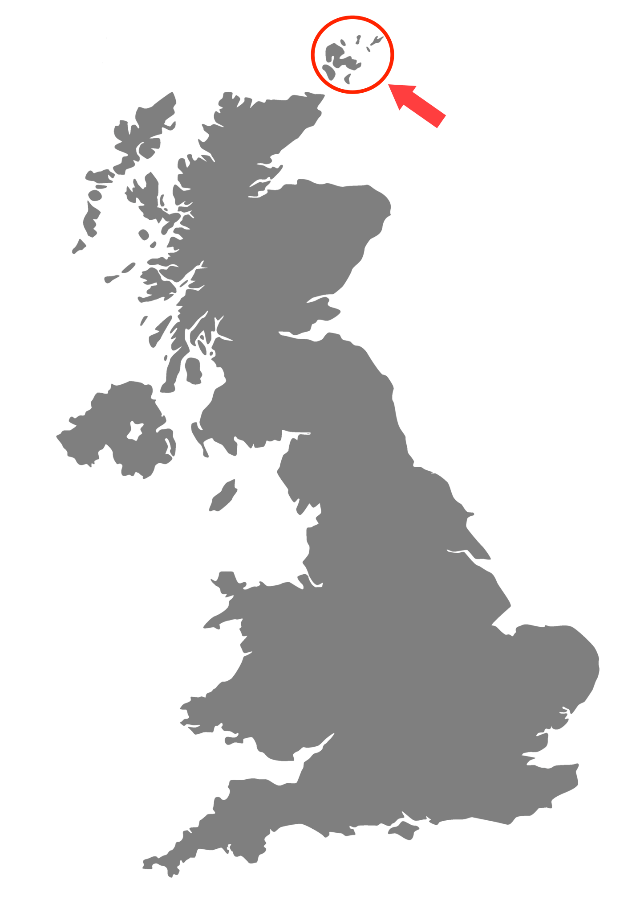
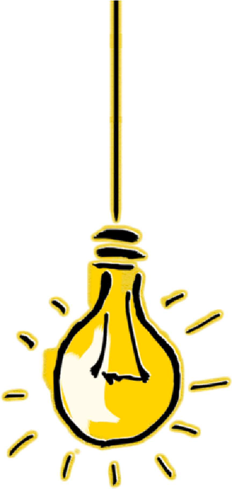
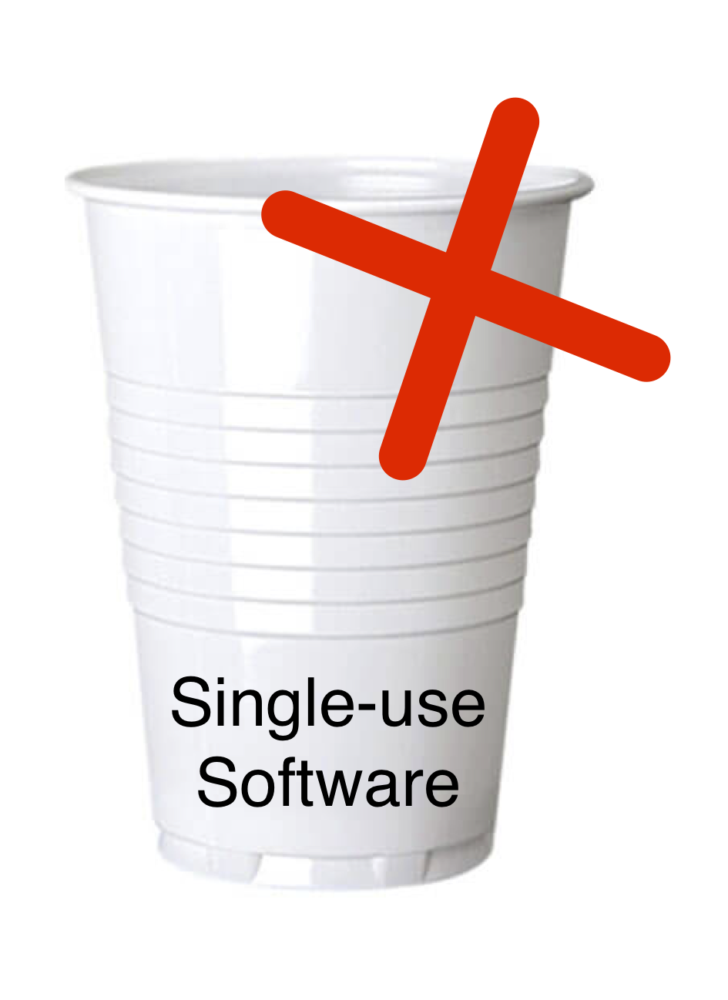
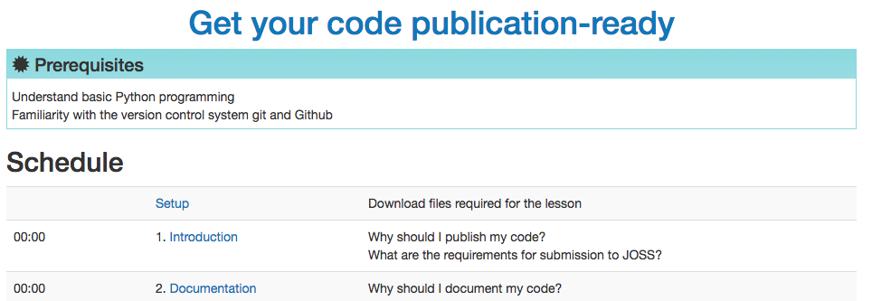

<!doctype html>
<html lang="en">
    <head>
        <meta charset="utf-8">
        <meta name="viewport" content="width=device-width, initial-scale=1.0, maximum-scale=1.0, user-scalable=no">

        <title>Slides Template</title>
        <link rel="stylesheet" href="./css/reveal.css">
        <link rel="stylesheet" href="./css/theme/white.css" id="theme">
        <link rel="stylesheet" href="./css/highlight/zenburn.css">
        <link rel="stylesheet" href="./css/print/paper.css" type="text/css" media="print">


    </head>
    <body>

        <div class="reveal">
            <div class="slides"><section  data-markdown><script type="text/template">

<!-- .slide: data-background="./images/polkadot_side.svg" -->


### SSI Fellowship Application 2019

</br>
Lucy Whalley | PhD student  
Imperial College London  
</br>
[lucydot.github.io/slides](https://lucydot.github.io/slides)
</br>
</br>

</script></section><section ><section data-markdown><script type="text/template">

<!-- .slide: data-background="./images/polkadot.svg" -->


</script></section><section data-markdown><script type="text/template">

<!-- .slide: data-background="./images/polkadot_side.svg" -->
#### researcher 

</br>
</br>
Objective: to optimise and design new materials for energy generation and storage

</script></section><section data-markdown><script type="text/template">

<!-- .slide: data-background="./images/polkadot_side.svg" -->
#### software..


<DIV ALIGN=LEFT>**USER**  </DIV>
- code optimised for high performance computing,  eg: [vasp_gpu](https://www.vasp.at/)


<DIV ALIGN=LEFT>**DEVELOPER**  </DIV>
- post-processing software, eg: [effmass](https://github.com/lucydot/effmass)
- Python (NumPy, SciPy, Pandas, pytest), bash, Julia
- I try to work openly: [lucydot.github.io/open](https://lucydot.github.io/open)

</script></section><section data-markdown><script type="text/template">

<!-- .slide: data-background="./images/polkadot_side.svg" -->
#### teacher

</script></section></section><section ><section data-markdown><script type="text/template">

<!-- .slide: data-background="./images/polkadot.svg" -->


</script></section><section data-markdown><script type="text/template">

<!-- .slide: data-background="./images/polkadot_side.svg" -->
#### I learn

- Conferences in 2018: RSE, CarpentryCon, MozFest
- The Journal of Open Source Software: author and reviewer


</script></section><section data-markdown><script type="text/template">

<!-- .slide: data-background="./images/polkadot_side.svg" -->
#### I facilitate

- I teach programming skills: git, bash, Python
- I develop teaching materials: [Pandas mini workshop](https://github.com/lucydot/feed-your-python)
- I organise workshops: Python workshop for PhD students

</script></section><section data-markdown><script type="text/template">

<!-- .slide: data-background="./images/polkadot_side.svg" -->
#### I advocate



"Publishing your Software Project with the Journal of Open Source Software"

</script></section></section><section ><section data-markdown><script type="text/template">

<!-- .slide: data-background="./images/polkadot.svg" -->


</script></section><section data-markdown><script type="text/template">

<!-- .slide: data-background="./images/polkadot_side.svg" -->
#### I'd like to...

- Attend RSE conference and CarpentryConnect (poster/talk)
- Software Carpentry on the Orkney Islands?!



</script></section><section data-markdown><script type="text/template">

<!-- .slide: data-background="./images/polkadot_side.svg" -->



I have an idea!
</script></section><section data-markdown><script type="text/template">

<!-- .slide: data-background="./images/polkadot_side.svg" -->
#### The Challenge

- researchers can be reluctant to share their code
- undocumented, untested --> "single-use software"



</script></section><section data-markdown><script type="text/template">

<!-- .slide: data-background="./images/polkadot_side.svg" -->
</br>
#### The Solution?



</script></section><section data-markdown><script type="text/template">

<!-- .slide: data-background="./images/polkadot_side.svg" -->
#### Who will I work with?

- Audience: Materials Science initially, if successful --> other domains
- Collaborators: [The Code Refinery](https://coderefinery.org/), Jeremy Cohen (RSE Fellow 2018 / RSLondon), Adam Jackson (SSI Fellow 2018), Anna Krystalli (ROpenSci) + other SSI Fellows?

</script></section></section><section  data-markdown><script type="text/template">

<!-- .slide: data-background="./images/polkadot_side.svg" -->
#### Thank-you!

Presentation slides + more details: [lucydot.github.io/slides](https://lucydot.github.io/slides/)


</script></section></div>
        </div>

        <script src="./lib/js/head.min.js"></script>
        <script src="./js/reveal.js"></script>

        <script>
            function extend() {
              var target = {};
              for (var i = 0; i < arguments.length; i++) {
                var source = arguments[i];
                for (var key in source) {
                  if (source.hasOwnProperty(key)) {
                    target[key] = source[key];
                  }
                }
              }
              return target;
            }

            // Optional libraries used to extend on reveal.js
            var deps = [
              { src: './lib/js/classList.js', condition: function() { return !document.body.classList; } },
              { src: './plugin/markdown/marked.js', condition: function() { return !!document.querySelector('[data-markdown]'); } },
              { src: './plugin/markdown/markdown.js', condition: function() { return !!document.querySelector('[data-markdown]'); } },
              { src: './plugin/highlight/highlight.js', async: true, callback: function() { hljs.initHighlightingOnLoad(); } },
              { src: './plugin/zoom-js/zoom.js', async: true },
              { src: './plugin/notes/notes.js', async: true },
              { src: './plugin/math/math.js', async: true }
            ];

            // default options to init reveal.js
            var defaultOptions = {
              controls: true,
              progress: true,
              history: true,
              center: true,
              transition: 'default', // none/fade/slide/convex/concave/zoom
              dependencies: deps
            };

            // options from URL query string
            var queryOptions = Reveal.getQueryHash() || {};

            var options = {"transition":"none"};
            options = extend(defaultOptions, options, queryOptions);
        </script>


        <script>
          Reveal.initialize(options);
        </script>
    </body>
</html>
